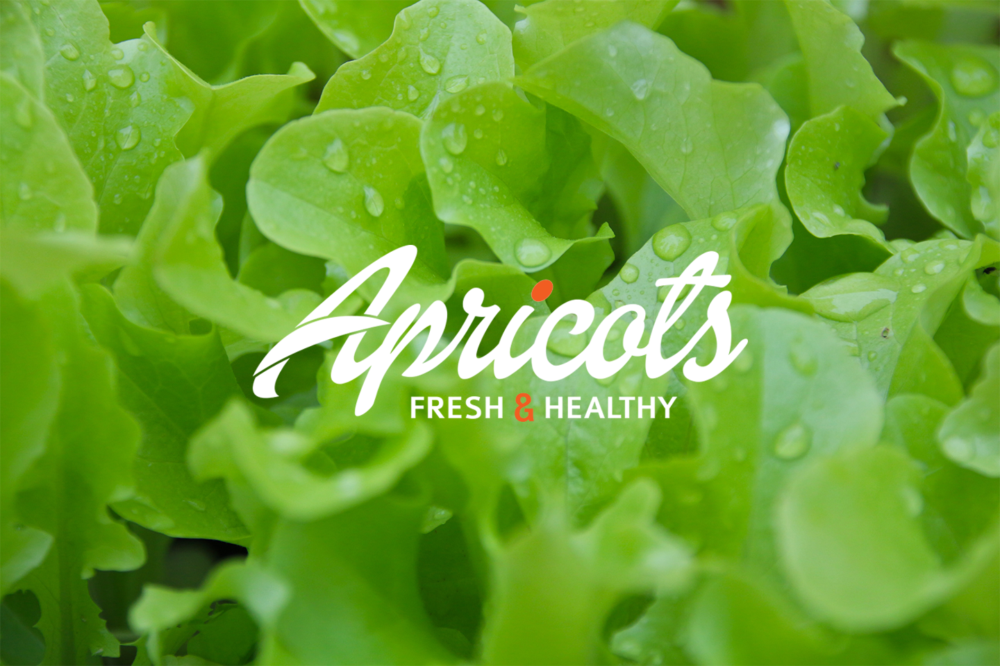
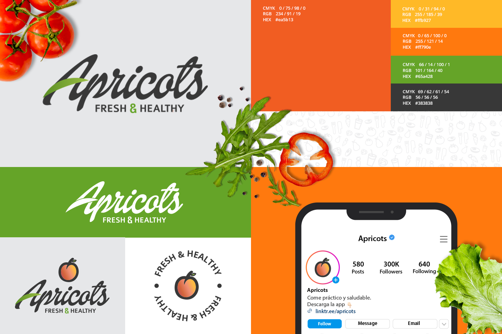
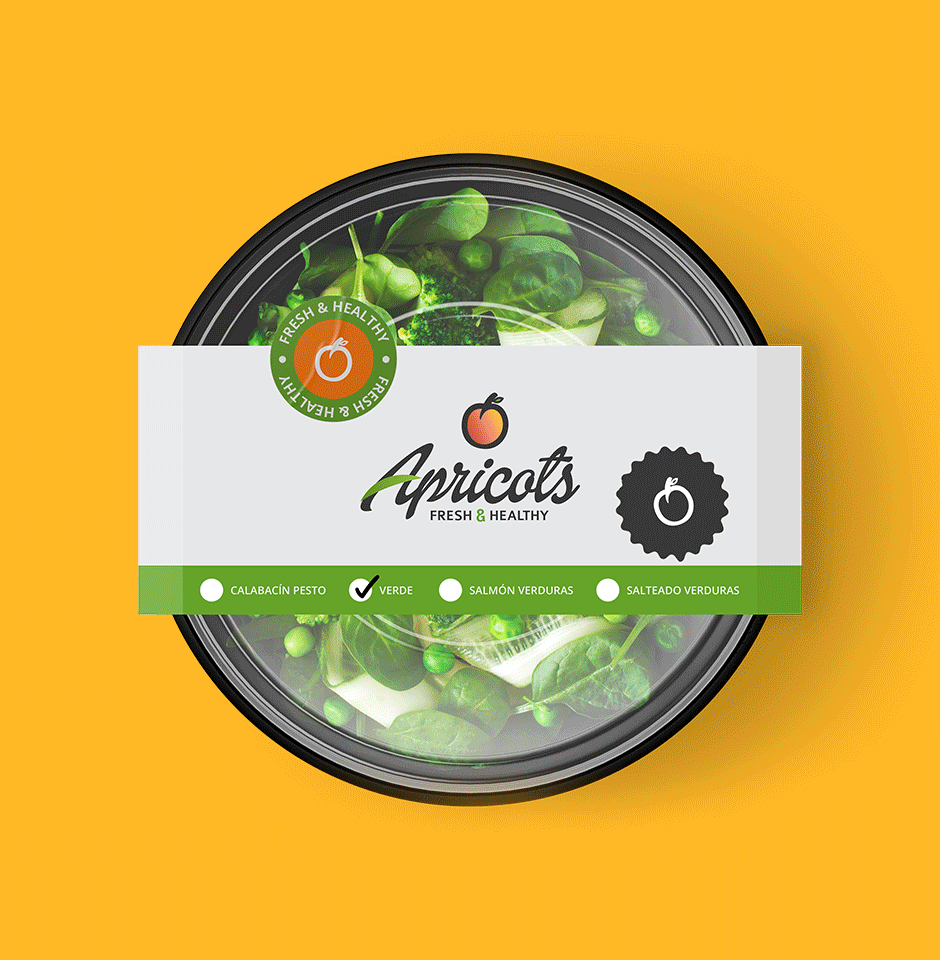
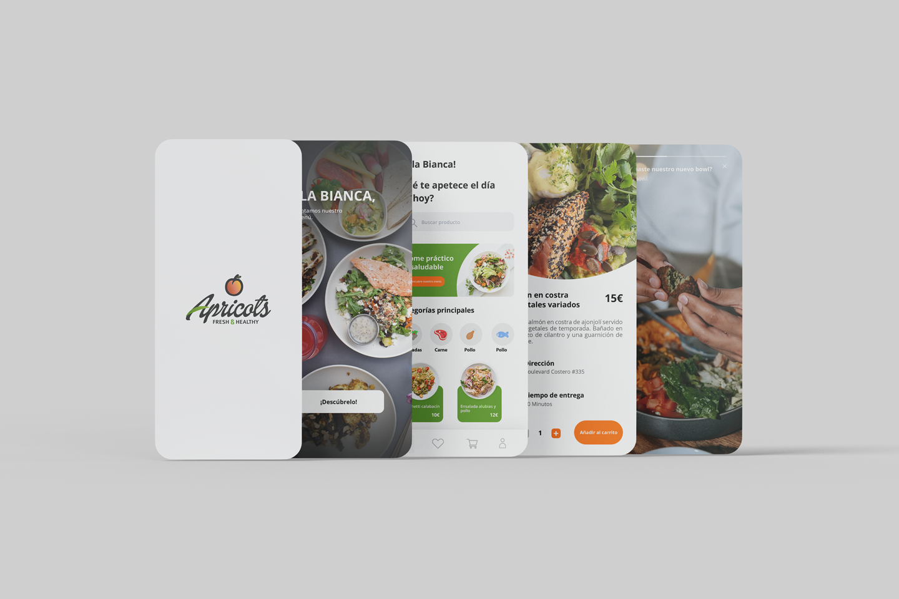
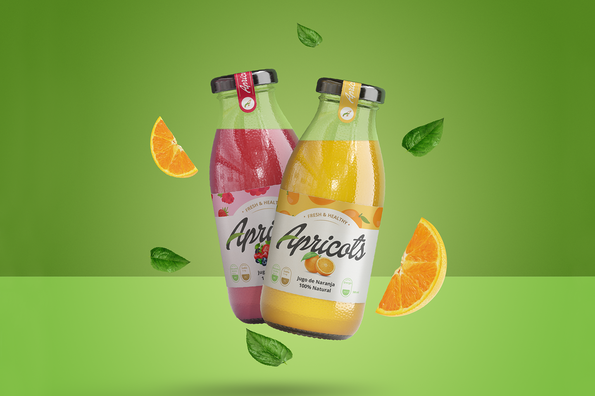
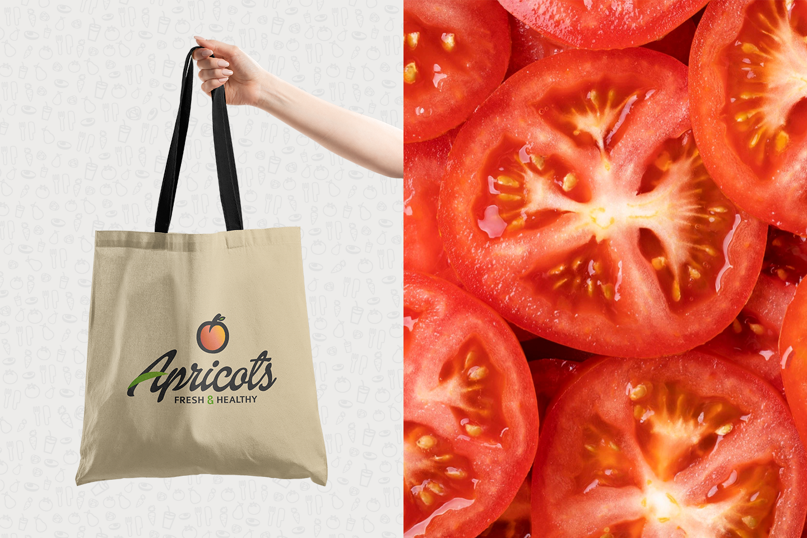
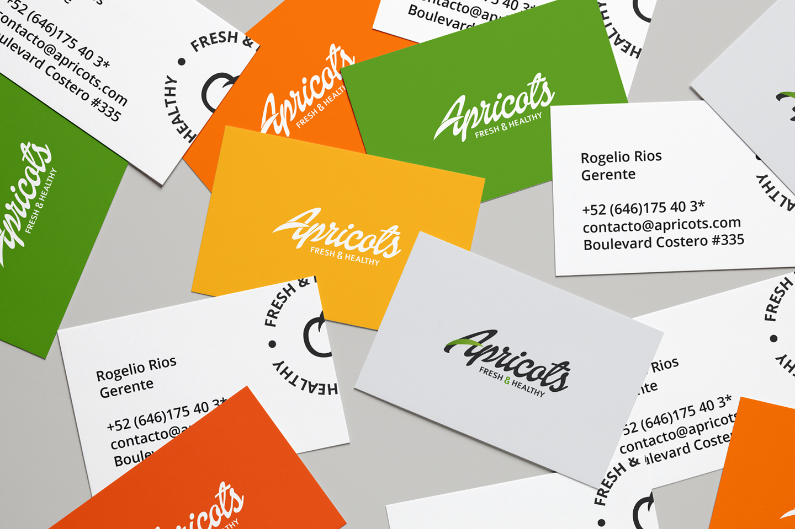
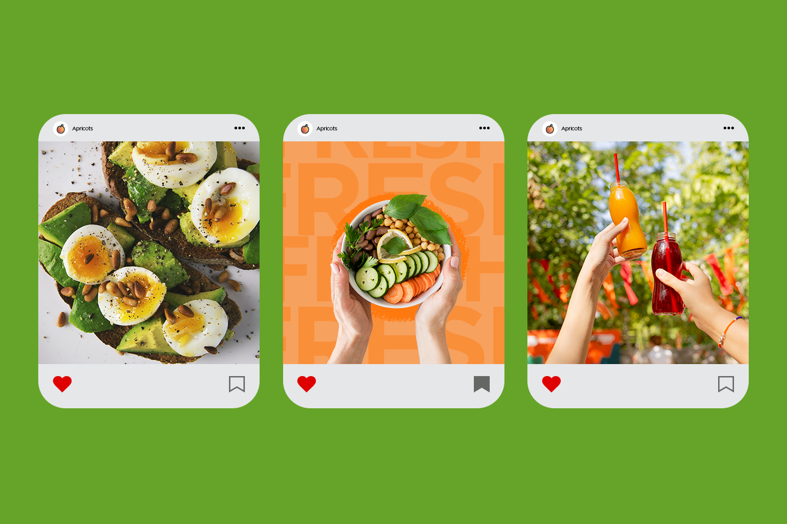
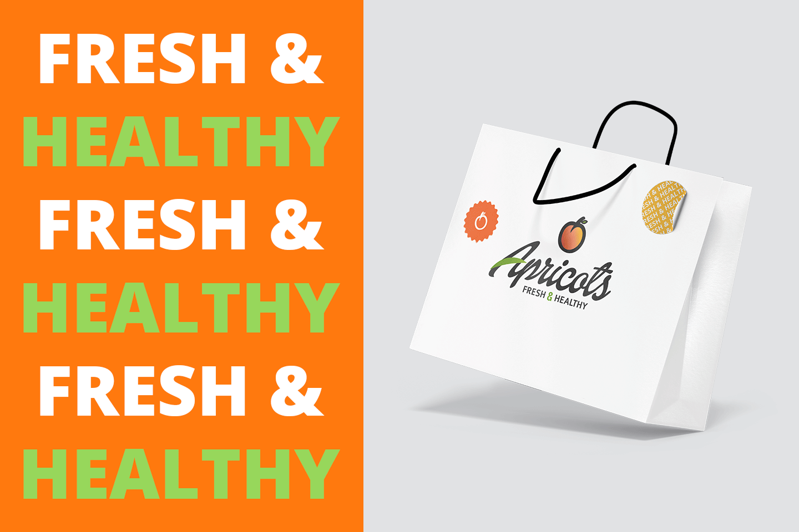

Apricots
Scaling fast-casual dining through strategic branding and zero-friction UX
Strategic Branding High-Conversion UX UX Strategy Brand Architecture

A complete transformation for a fast-casual restaurant brand merging a playful, health-focused visual identity with an intuitive digital ordering ecosystem.
Product
Apricots is a fast-casual restaurant specialized in practical, healthy, high-quality meals. I redesigned its digital catalog into a visual, low-friction menu that simplifies bowl customization and accelerates checkout.
Challenge
Apricots needed to disrupt a crowded healthy food market with a friendly personality while eliminating ordering friction across digital and physical touchpoints.
Solution
A vibrant brand architecture, high-impact packaging system, and a mobile-first digital experience engineered for top-of-mind recall and rapid conversion.
Role
Brand Designer &
Visual Identity Specialist







